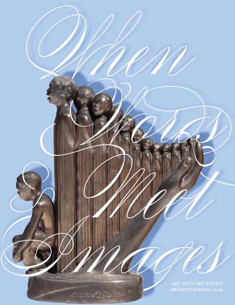

Columbia College 2026 Art History Symposium: When Words Meet Images
You are cordially invited to Columbia College Chicago’s 2026 Art History Symposium: When Words Meet Images! Hosting over 14 incredible student presenters, join us on Saturday, May 16th, in the Hokin Lecture Hall for an afternoon of discussion and art. This event is open to the public; please register on Eventbrite.
Art History Symposium: When Words Meet Images 2026
Schedule
Session One: Belief and Disbelief
1:00pm to 2:30pm
The presentations in this session consider how art and visual culture reflect a given era’s social and political values. Ranging from the Gothic embrace of the abject as a key component of Christianity to the ways that contemporary artists critique and subvert visual languages, this session poses the question of why do we believe what we believe? How might images inform our relationships and understanding of ourselves and others? As a counterpoint, some of the papers in this session explore how imagery can also generate disbelief in systems be they sacred or profane.
Featuring: Iyana Casimiro, Destiny Jackson, Joseph Goff, Joon Lee, Cristian Romero, & Eleanor Thompson
2:45 BREAK, 15 minutes